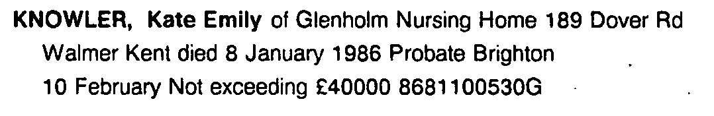
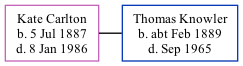

Kate Emily Knowler (née Carlton) 1887 - 1986
[ Home ] | [ Calendar ] | [ Surnames Index ] | [ Family History ]Kate Carlton, the wife of Thomas William Knowler (the first cousin twice-removed on the mother's side of Nigel Horne), was born on Jul 5, 18871. She married Thomas in Dover, Kent, England in 19513 (Oct/Nov/Dec). In 1986, she lived on Glenholm Nursing Home, 189 Dover Road, Walmer, Kent. That is also where she died on Jan 8, 1986 in Dover1,2.
Citations
- England & Wales, Death Index: 1984-2005 Online publication - Provo, UT, USA: The Generations Network, Inc., 2007.Original data - General Register Office. England and Wales Civil Registration Indexes. London, England: General Register Office. © Crown copyright. Published by permission of the Cont
- England & Wales Government Probate Death Index 1858-2019 - Findmypast
- England & Wales, Marriage Index: 1916-2005 Online publication - Provo, UT, USA: The Generations Network, Inc., 2009.Original data - General Register Office. England and Wales Civil Registration Indexes. London, England: General Register Office. © Crown copyright. Published by permission of the Cont
Media
Kate Carlton - probate

England & Wales Government Probate Death Index 1858-2019 - GBOR/GOVPROBATE/C/1986-1986/00120772
Family Tree
Generated by Ged2Site. Last updated on Jul 20, 2025